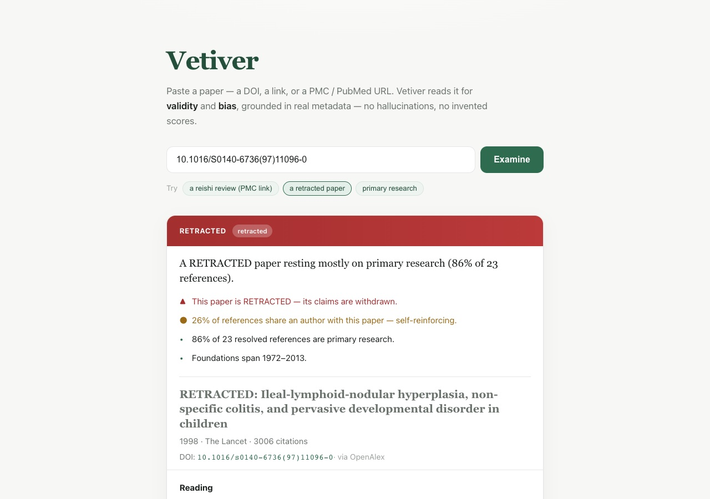

Vetiver
Examines a medical paper for validity and bias, and shows where every judgement came from
Give Vetiver one medical paper, as a DOI or a scholarly link, and it returns a grounded appraisal of the paper's validity and bias. Every line of the result names the field it came from, and the things it cannot judge are listed as blind spots instead of being guessed at.

What it reads from the record
From the paper's record it reads whether the paper has been retracted, what kind of work it is (primary research, review, preprint or book), how many of its references can actually be looked up, whether it has named authors with affiliations and a known venue, and how often it is cited, which is labelled as influence and not as validity. The verdict is a standing plus flags, a short reading, and declared blind spots such as methods, statistics and funding; it is deliberately not a numeric score and does not claim a strength of evidence the record cannot show.
What the paper stands on
- A plain-English headline and findings ranked by how serious they are.
- One step out: how much of the reference list is primary research and how much is reviews, which references are retracted, how much the authors cite themselves, and how old the sources are.
- Two steps out, on request: the single sources a whole body of work leans on, and citations that loop back on themselves.
- On request, a reading of whether each citation actually supports the paper's claims; every verdict must quote the source, or it is marked not addressed.
Scope
Vetiver appraises medical papers and nothing else, and it fetches only from a fixed list of scholarly hosts.
- Year
- 2026
- Medium
- software / research / evidence
- Give it
- a DOI or a scholarly link (doi.org, PubMed, PMC)
- Built in
- Rust, served as a web page
- Repository: private